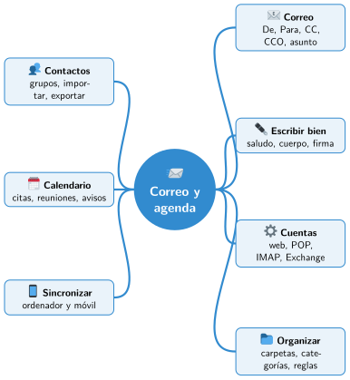

Bloque IV · Multimedia, comunicación y seguridad
UD08 Correo y agenda
RA8Gestiona el correo y la agenda electrónica manejando aplicaciones específicas.

Sesiones
- Sesión 8.1 El correo electrónico: elementos y cuentas
- Sesión 8.2 Organizar el correo y los contactos
- Sesión 8.3 La agenda electrónica
Al terminar la unidad
Mapa mental de la unidad

✏️ Repasa la unidad con el mapa: tapa una rama y explica en voz alta lo que pone.